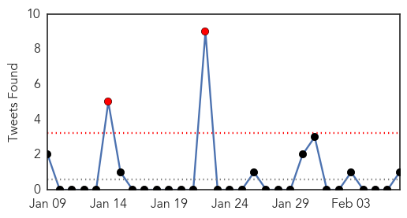

30 Day Trends
Web: 8 alerts, 6 warnings
Twitter: 2 alerts, 0 warnings
Top Articles:
- 0.940
- Retirement home hit by flu bug - Steubenville, Wintersville, Toronto, Mingo, Weirton, Jefferson County
- 0.935
- Merck, Utrecht University to research pig virus vaccine
- 0.932
- Bird Flu Death Reported in Vietnam
- 0.917
- Chicago Tribune
- 0.917
- Chicago Tribune
- 0.917
- Chicago Tribune
- 0.917
- Chicago Tribune
- 0.917
- Chicago Tribune
- 0.917
- Chicago Tribune
- 0.917
- Chicago Tribune
- 0.917
- Chicago Tribune
- 0.917
- Chicago Tribune
- 0.917
- Chicago Tribune
- 0.917
- Flu Season: When to See a Doctor
- 0.910
- The world windows to Thailand
- 0.898
- Is aging building to blame for superbug outbreak at Royal Columbian Hospital?
- 0.898
- H7N9 kills one more, causes new infections in China - Xinhua
- 0.895
- Man, 81, dies of H7N9 avian flu infection in Fujian
- 0.895
- Kingsport Times-News: Authorities confirm norovirus outbreak in area
- 0.866
- Syria will join second round of Geneva peace talks -state TV
- 0.847
- Bird flu kills one more in China
- 0.847
- Oklahoma flu deaths rise by 8 to 33 since Sept. 29
- 0.825
- Pig virus detected in Lambton County
- 0.816
- Woman Dies of Flu In Brevard County
- 0.794
- Influenza virus H7N9 now detected in southern China increasing risk of cross-border spread
- 0.723
- Three months on from the typhoon: relief effort well underway, but recovery will take a lot longer - Philippines
- 0.707
- UNICEF gives Liberian health workers newborn and child care training
- 0.689
- In search of a cure, scientists look for where HIV hides
- 0.682
- MSD Animal Health, Utrecht University Partner up to Discover PED Vaccine
- 0.670
- Suspected norovirus shuts NY's Mohonk Mountain House for week [UPDATE]
- 0.669
- Left for dead: the mysterious disease killing thousands in Central America
- 0.658
- STD may Reemerge, According to Study
- 0.626
- 'F**k the EU,' US envoy says in leaked recording
- 0.626
- Turkey moves to deport journalist after tweets critical of PM
- 0.626
- Scenes of ‘absolute terror’ amid Muslim exodus from Bangui
- 0.626
- French inmate freed after fax runs out of ink
- 0.626
- Candid American tales of sex surprise Berlin
- 0.626
- Anti-government protests turn violent in Bosnia
- 0.573
- New research in vaccination for infants' virus
- 0.571
- Recent Lab Breakthrough Related to PEDV
- 0.522
- Gregory House MD is so amazing he’s even saved a real-life patient
- 0.518
- ‘Critical incident’ at Tallaght hospital to be probed
Top Tweets:
- 0.816
- Flu Fact Friday: If you have underlying medical conditions you are more likely to develop serious complications from obtaining the flu.
Web/News Articles
Tweets
Article Locations
Article Confidences